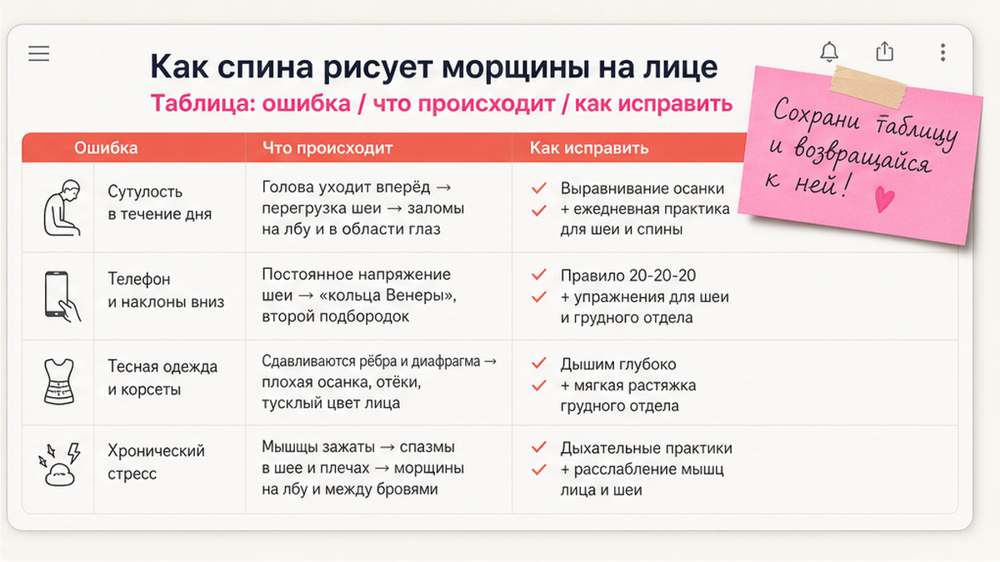
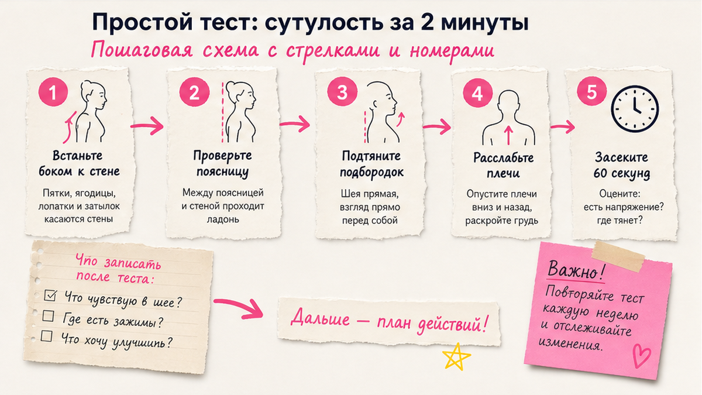
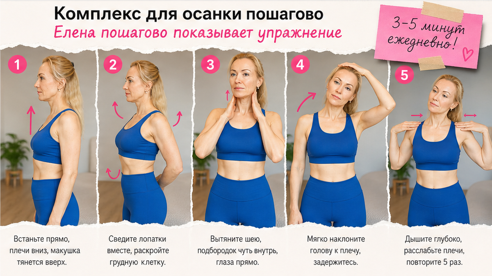

Сутулость часто "рисует" морщины на лице раньше, чем возраст: когда плечи округлены, голова уезжает вперёд, шея укорачивается, овал визуально "течёт" вниз. Крем при этом работает в полсилы. Сначала - мягко выровнять осанку и положение головы, потом - короткий комплекс дома, 3-5 минут в день.
Ко мне нередко приходят с одной и той же фразой.
"Елена, я делаю уход. Массаж. Даже фейс-йогу. А лицо будто устало - и не проходит."
Смотрю на человека не только на лицо.
На то, как она села на стул.
Плечи вперёд.
Подбородок чуть к груди.
И вдруг всё складывается.
Морщины - не только "кожа плохая".
Иногда это спина, которая весь день держит голову не там, где нужно.
Я не против кремов.
Я против иллюзии, что баночка перерисует то, что тело каждый день "сгибает" в одну и ту же складку.
Сейчас покажу связь - без запугивания и без обещаний "минус десять лет за неделю".

Если по-простому: позвоночник - это не декор.
От него зависит, где сидит голова.
Грудной отдел округлился - голова неизбежно смещается вперёд.
Шея получает лишнюю нагрузку.
Мышцы передней поверхности шеи - платизма - тянут нижнюю треть лица вниз.
И в зеркале вы видите не "новые морщины от возраста".
Вы видите следствие положения.
Первая картина. Подбородок "прячется", на шее собираются борозды - то, что часто называют кольцами Венеры.
Вторая. Уголки рта визуально опускаются, хотя настроение нормальное.
Третья. Носогубные складки становятся заметнее - не потому что "кожа устала", а потому что ткани постоянно сжаты.
Четвёртая. Овал будто "сползает", хотя жир и объём на месте.
Я часто связываю это с материалом про второй подбородок: язык, дыхание, осанка - одна цепочка.
Сутулость усиливает эффект "двойного подборodka" даже при нормальном весе.
И наоборот: мягко открыли грудь, вернули голову - подбородок визуально уходит назад, лицо "собирается".
Ещё момент, о котором редко говорят вслух.
При сутулости мы неосознанно поднимаем брови, чтобы "дотянуться" взглядом до экрана.
Отсюда горизонтальные линии на лбу и залом между бровями.
Лицо стареет не только снизу.
И не только "от крема, который не подошёл".
Лимфа - внутренняя система, которая помогает тканям избавляться от лишней жидкости.
Когда грудная клетка сжата вперёд, отток медленнее.
К вечеру лицо "подушечное", тусклое.
Женщины покупают новую маску.
А организму нужно другое - перестать сидеть "комочком" восемь часов.
Я это вижу на консультациях снова и снова.
Утром лицо свежее.
К шести вечера - будто "упало".
Крем тот же.
Макияж тот же.
Изменилось положение.
Три часа подряд над телефоном - и подбородок уже рисует другую линию.
Не навсегда.
Но каждый день, если не ловить себя.
Ещё связь, которую редко называют вслух.
Стресс.
Когда тревожно, плечи сами "закрывают" грудную клетку.
Дыхание становится поверхностным.
Лицо зажимается.
Вы думаете: "Надо ещё одну сыворотку".
А телу нужен выдох и тридцать секунд у стены.
Я не против ухода.
Я за порядок: сначала понять, что сжимает лицо изнутри, потом подобрать крем под состояние кожи.
Смотри.
Именно этот момент обычно упускают.
Фейс-йога без осанки - как мыть окна, когда крыша протекает.
Можно.
Но дождь снова зальёт стекло.

Перед упражнениями - короткая проверка.
Не для самобичевания.
Чтобы понять, откуда "рисуется" лицо.
Тест у стены. Пятки, ягодицы, лопатки, затылок - к стене.
Если затылок не касается, пока вы не задираете подбородок - грудной отдел, скорее всего, округлён.
Запомните, насколько плечи "висят" впереди.
Тест уши-плечи. Профиль в зеркале.
Уши должны быть примерно над серединой плеча.
Если "смотрят" на ключицу - голова впереди, шея перегружена.
Тест подборodka. Мягко коснитесь подбородком грудины - без давления.
Если на шее сразу "гармошка" - передняя цепь короткая.
Это не приговор.
Это точка входа.
Запишите три строки: стена, уши, гармошка.
Через две недели комплекса повторите.
Изменения часто видны раньше, чем "эффект от новой сыворотки".
Если боль в шее острая, кружится голова, онемение - сначала врач.
Домашняя практика - для здоровых, но "забитых" мышц, не для острых состояний.

Ниже - базовый комплекс, который я даю дома.
3-5 минут.
Лучше утром или после долгого сидения.
На занятиях я в йога-костюме и показываю в зеркале - как домашний урок.
Не все блоки сразу в первый день.
Блок 1. Открытие груди (1-2 минуты)
Шаг 1. Сядьте на стул, стопы на полу.
Шаг 2. Руки за голову, локти в стороны.
Шаг 3. На выдохе мягко сведите лопатки - грудь "открывается".
Шаг 4. Подборodok не задирайте. Пять медленных дыханий.
Блок 2. Подборodok назад (основа)
Шаг 1. Взгляд прямо. Подборodok параллельно полу.
Шаг 2. Мысленно "выдвиньте" подбородок назад - как будто затылком касаетесь стены позади.
Шаг 3. Лёгкое натяжение под челюстью, не боль. Пять секунд.
Шаг 4. Восемь повторов.
Это связка с упражнением "Ковш" - там я разбирала подбородок подробнее.
Блок 3. Платизма и шея
Шаг 1. Губы сомкнуты, язык на нёбе - как в материале про язык.
Шаг 2. Плечи опущены.
Шаг 3. Медленно опустите подбородок к груди, почувствуйте растяжение спереди шеи.
Шаг 4. Вернитесь в нейтраль. Шесть раз. Без резких бросков.
Блок 4. Лопатки к "карманам"
Шаг 1. Стоя или сидя, руки вдоль тела.
Шаг 2. Локтями тянетесь к задним карманам джинсов - образно.
Шаг 3. Лопатки сходятся, грудь поднимается. Десять повторов.
Блок 5. Дыхание у стены
Шаг 1. Снова тест у стены.
Шаг 2. Вдох - ребра в стороны.
Шаг 3. Выдох - мягко, без зажима.
Запишите в телефоне: "3-5 минут сделано".
Через 10-14 дней многие говорят: "Лицо будто поднялось, хотя крем тот же".
Это не магия.
Биомеханика.
Про шею глубже - в статье про кольца Венеры и платизму.
Отдельно про стол.
Потому что 80% моих учениц сидят за ноутбуком.
Монитор ниже глаз.
Локти висят.
К первому обеду подбородок уже "живёт своей жизнью".
А вечером - "надо купить патчи".
Монитор - верхний край на уровне глаз.
Локти - около 90 градусов, предплечья на столе.
Стопы - на полу, колени чуть ниже бёдер.
Каждый час - тридцать секунд: блок 2 (подбородок назад) + три выдоха.
Я ставлю будильник "осанка".
Иначе увлекаюсь ответами учениц и снова складываюсь.
Хотя нет… точнее: не "ленюсь", а мозг возвращается к старой привычке экономить энергию.
Маленькие якоря работают лучше, чем "героическая" осанка на пять минут.
Каждый раз, когда наливаете чай - три секунды, блок 2.
Каждый раз, когда открываете ноутбук - монитор на уровень глаз.
Каждый раз, когда ловите себя на сжатых зубах - язык к нёбу, зубы расслабить.
Это скучно.
Зато работает.
Одна ученица три недели делала только "красивую осанку" по пять минут утром.
К обеду снова сгибалась.
Мы добавили один якорь: будильник каждый час - "подбородок назад".
Через десять дней она написала: "К вечеру лицо не такое тяжёлое".
Не идеал.
Но уже не "маска усталости" к шести.
Замечали?
Уставшая спина = уставшее лицо, даже после сна.
Плечи вперёд - уголки рта визуально вниз.
Вы спокойны, а спрашивают: "Что случилось?"
Это не характер.
Геометрия.
На занятиях я прошу встать к зеркалу: "как обычно" и "после блока 2".
Разница часто шокирует.
Мотивирует лучше, чем "до/после" от крема.
Если хотите понять, почему я не делю "тело" и "лицо" - почитайте про фейсбилдинг и фейс-йогу.
Там про системность, не про спор школ.
Дни 1-2: только тест у стены утром и вечером.
Дни 3-4: блоки 1 и 2 после умывания. Три минуты.
Дни 5-7: полный комплекс. Вечером - минута расслабления лица.
Дни 8-14: перерывы за компьютером + блок 2 каждый час. Повторите тест.
Не перегружайте.
Осанка - часть ухода, как умывание.
День 1. Только тест. Запишите в заметки три строки.
День 2. Повторите тест вечером - сравните ощущения, не "оценку себя".
День 3. Блок 1 утром после воды.
День 4. Блок 1 + блок 2.
День 5-7. Полный комплекс. Не гонитесь за идеальной техникой - гонитесь за регулярностью.
День 8-14. Добавьте перерывы за столом. Одно фото профиля в одинаковом свете.
Если пропустили день - не ругайте себя.
Мозг возвращается к старой привычке не из лени.
Из экономии энергии.
Завтра снова три минуты - и цепочка не рвётся.
Комплекс простой.
Ошибки - тоже.
| Ошибка | Что происходит | Как исправить |
|---|---|---|
| Телефон на коленях | Голова вперёд, шея перегружена к обеду | Экран на уровне глаз |
| "Солдатская" осанка | Зажим поясницы, через час снова сгорбились | Мягкая нейтраль, не зажим |
| Только лицо, без спины | Морщины возвращаются к вечеру | 3-5 минут комплекса + перерывы |
| Игнор стресса | Грудная клетка "закрывается", лицо тяжелеет | Дыхание + расслабление челюсти |
| Сумка на одном плече | Перекос, асимметрия в профиле | Рюкзак или смена стороны |
Сделайте: одно фото профиля в одинаковом свете в день 1 и 14. Не делайте: ждать "идеальной осанки" за три дня после годов за столом.
Когда осанка мягче, кожа на шее меньше "мнётся".
Но уход не отменяю.
Сначала - положение тела.
Параллельно - увлажнение, SPF.
Если делаете диагностику кожи, смотрите декольте - там последствия сутулости часто видны раньше, чем на щеках.
После комплекса - мягкий массаж шеи вверх, от ключиц к подбородку.
Не тянуть агрессивно.
Крем под запрос кожи - часть системы, не замена осанке.
Один и тот же уход с индивидуальной активной фазой у одной женщины успокаивает стянутость, у другой - просто даёт скольжение для работы с шеей.
Разница в барьере кожи, не в рекламном обещании.
Ольга, 49 лет.
Пришла с "морщинами вокруг рта".
Диагностика, крем.
Через месяц: "Лучше, но что-то не то."
Тест у стены - затылок не касается, уши впереди плеч.
Две недели - только комплекс осанки, без новых сывороток.
На третьей неделе фото профиля: "Подборodok будто вернулся."
Крем не был лишним.
Он увлажнял.
Но "рамку" рисовала спина.
Давай покажу на этом примере главное.
Лицо живёт в теле.
Не в баночке отдельно.
Ольга потом добавила минуту расслабления челюсти вечером - из урока про расслабление.
Говорит, легче засыпать без "зажатого" лица.
Мелочь?
А утром в зеркале - другая мягкость в нижней трети.
Я не обещаю, что осанка "сотрёт" все морщины за месяц.
Но убрать ощущение, что лицо "течёт" к вечеру - реально.
Без гонки, без стыда, без сравнения с чужими селфи.
Глубокие заломы одной осанкой редко "стираются". Но визуально лицо часто свежее: овал чётче, шея длиннее, подбородок не "прилипает" к груди. Дальше - ваш уход и точечная фейс-йога.
3-5 минут комплекса плюс короткие напоминания: экран выше, перерывы каждые 45-60 минут.
Мне 53. Начала не в двадцать. Важнее регулярность, чем возраст на паспорте.
Домашний комплекс безопасен при мягком выполнении. Боль, головокружение - стоп, к специалисту.
Повторите тест у стены через 14 дней. Одно фото профиля в одинаковом свете. Близкие часто замечают "ты стала выше" раньше вас.
Часто да - при "голове вперёд" напрягается задняя поверхность шеи. Мягкий комплекс и перерывы иногда помогают. При частых мигренях - врач.
Если после прочтения остался один вопрос - "с чего сегодня" - начните с теста у стены и блока 2.
Этого достаточно для первого дня.
Лицо должно становиться легче, а не "работать на износ".
И да - когда тело перестаёт "рисовать" морщины сутулостью, крем наконец делает то, для чего вы его покупали.
Если хотите почувствовать разницу уже сегодня - встаньте к стене, сделайте блок 2, три выдоха.
Этого достаточно для первого вечера.
Завтра повторите.
Лицо любит последовательность, а не шок.
Вы это заслуживаете - без гонки за идеалом.
Достоверность: материал основан на практике Елены Шимановской в фейс-йоге. Не медицинская рекомендация. При острой боли в шее, онемении, головокружении - сначала очный осмотр.